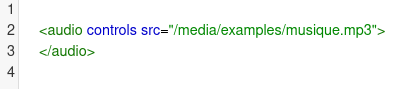
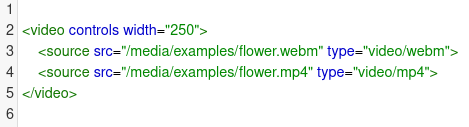
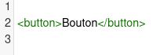

Sommaire
Revenir à G-StoreHTML
I - Les balises
1 - Définition
Un document HTML est un fichier texte qui contient des balises (ou tag en anglais). Ces balises doivent être utilisées d'une certaine façon pour décrire correctement la structure du document. Les balises indiquent au navigateur comment afficher le document, certaines balises permettent d'intégrer différents médias comme des images, des vidéos ou des musiques parmi le texte de la page comme le < audio > .
2 - Exemples: une liste non-ordonnée

II - Les médias
1 - Image: < img >
Cette balise permet d'intégrer une image dans un document HTML.

2 - Audio: < audio >
Cette balise permet d'intégrer un audio dans un document HTML.
3 - Vidéo: < video >
Cette balise permet d'intégrer un audio dans un document HTML.
III - Le tableau
La balise < table > permet de créer un tableau. Il faudra utiliser la balise < tr > pour créer une nouvelle ligne dans le tableau. Entre les balises < tr > et < /tr > nous mettrons nos cellules grâce aux balises < td >.
IV - Les liens
1 - Ancre
L'ancre est un lien vers un endroit précis de la page courante, ou d'une autre page afin de positionner correctement le navigateur.

2 - Lien interne
On peut créer un lien vers une page située sur le même ordinateur en remplaçant l'URL par le fichier cible. Ce lien peut être fait de façon relative, en repérant le fichier cible par rapport au fichier source.

3 - Lien externe
Un lien externe est un lien vers une page pointée par son URL.
CSS
I - Les sélecteurs
1 - Le sélecteur de tout: *
L'astérisque cible tous les éléments de la page.
2 - Le sélecteur d'id: #x

L'utilisation du symbole dièse comme sélecteur nous permet de cibler un élément par son id. Ce sélecteur d'id est probablement celui qui est le plus couramment utilisé mais il doit l'être avec quelques précautions.
3 - Le sélecteur de class: .x
L'utilisation du symbole . comme sélecteur nous permet de cibler un élément par sa class.
4 - Le sélecteur descendant: x y
Le sélecteur descendant permet de cibler les éléments qui sont à l'intérieur d'autres éléments.
5 - Le sélecteur de type: x
Le sélecteur de type permet de cibler tous les éléments d'une page, non pas selon leur id ou leur class mais selon leur type.
6 - Le sélecteur adjacent: x + y
Il permet de ne sélectionner que l'élément qui est immédiatement précédé par le premier élément ciblé. Ici, par exemple, seul le premier paragraphe après chaque ul comprendra du texte de couleur rouge.
7 - Le combinateur d'enfant: x > y
Soit le balisage suivant:
Soit le css suivant:
Le sélecteur #container > ul ne ciblera que les uls qui sont enfants directs de la div avec l'id container. A l'inverse, il ne ciblera pas, par exemple, le ul qui est enfant du premier li.
8 - Le combinateur de frères: x ~ y
Il sélectionne n'importe quel élément p, du moment qu'ils suivent un ul.
II - Les pseudos-classes
1 - Le pseudo-classe link et visited: x:link x:visited
La pseudo-classe :link est utilisée pour cibler toutes les balises d'ancres qui ne sont pas encore cliquées. La pseudo-classe :visited permet d'appliquer une mise en forme spécifique aux seules balises d'ancres de la page qui ont été cliquées ou visitées.
2 - Le pseudo-classe checked: x:checked
Cette pseudo-classe ne ciblera un élément d'interface utilisateur que s'il a été coché (checked) - comme un bouton radio ou une case à cocher.
3 - Le pseudo-classe after: x:after
Ce hack utilise la pseudo-classe :after pour ajouter un espace après l'élément puis le rend invisible. Pensez à garder cette ingénieuse astuce dans un coin de votre boîte à outils, surtout pour les cas où la méthode overflow: hidden; n'est pas possible.
4 - Le pseudo-classe hover: x:hover
Permet d'appliquer une mise en forme spécifique quand un utilisateur survole un élément
5 - Le pseudo-classe first-child: x:first-child
Cette pseudo-classe structurelle permet de cibler uniquement le premier enfant de l'élément parent.
6 - Le pseudo-classe nth-child(): x:nth-child(n)
Permet de cibler des éléments spécifiques d'une liste
III - Les pseudos-éléments
Nous pouvons utiliser des pseudo-éléments (identifiés par ::) pour mettre en forme des parties d'un élément, comme la première ligne ou la première lettre.
1 - Le first-letter
Ce bout de code est une abstraction qui va chercher tous les paragraphes de la page puis sous-cible seulement la première lettre de cet élément.
2 - Le first-line
Le pseudo-élément ::first-line met en forme la première ligne de l'élément, et elle seule.
IV - La mise en forme
La mise en forme c'est le fait d'appliquer des propriétés CSS aux éléments HTML. Ci-dessous un exemple sur un bouton.
Exemple : un bouton
Le HTML :
Le CSS :
Le résultat :
V - Le responsive design
Le responsive web design est une façon de concevoir un site web pour que son contenu s'adapte automatiquement à la largeur et/ou à la hauteur de l'écran qui le visionne.
1 - Viewport
Il s’agit de la surface visible, la surface utilisée pour afficher votre site web.
2 - Flexbox
Le Flexbox permet de gérer les espaces inter-colonnes (gouttières), les décalages (“offsets”), les différentes tailles d’écran et d’être automatisable. Le tout en un minimum de code et un maximum de propreté HTML.
3 - Media-Queries
Les medias-queries permet de cibler du CSS spécifiquement à une taille d’écran. Par exemple, le code suivant appliquera du CSS uniquement aux écrans plus petits que 1024 pixels de large :
JS Javascript
I - La sélection
1 - getElementById()
Une méthode permettant de ciblere un élément par son id, c'est la plus utilisée.
2 - getElementByClassName()
Une méthode permettant de ciblere un élément par l'attribut class
3 - getElementByName()
Une méthode permettant de ciblere un élément par l'attribut name
II - Les instructions conditionnelles
1 - L'instruction if...else
Ci-dessous un exemple.
2 - L'instruction switch...case()
Ci-dessous un exemple.
3 - Les expressions régulières
Ci-dessous un exemple sur la vérification d'un email
III - Les boucles
Exemple : La boucle while
La boucle while, francisée en boucle tant que, est une structure de contrôle permettant d'exécuter un ensemble d'instructions de façon répétée sur la base d'une condition booléenne. La boucle while peut être considérée comme une répétition de l'instruction if.
IV - Jquery
jQuery est un framework Javascript sous licence libre qui permet de faciliter des fonctionnalités communes de Javascript. L'utilisation de cette bibliothèque permet de gagner du temps de développement lors de l'interaction sur le code HTML d'une page web, l'AJAX ou la gestion des évènements.
1 - Les sélections
Sélection par l'attribut class
Sélection par l'attribut id
2 - Le changement d'attribut : Exemple "src" d'image
Le HTML :
Ici, on va changer le lien de l'image par l'attribut "src".

V - AJAX
AJAX est l'acronyme d'Asynchronous JavaScript And XML, autrement dit JavaScript Et XML Asynchrones. AJAX n'est ni une technologie ni un langage de programmation ; AJAX est un concept de programmation Web reposant sur plusieurs technologies comme le JavaScript et le XML – d'où le nom AJAX.
Ci-dessous un exemple d'utilisation d'AJAX.